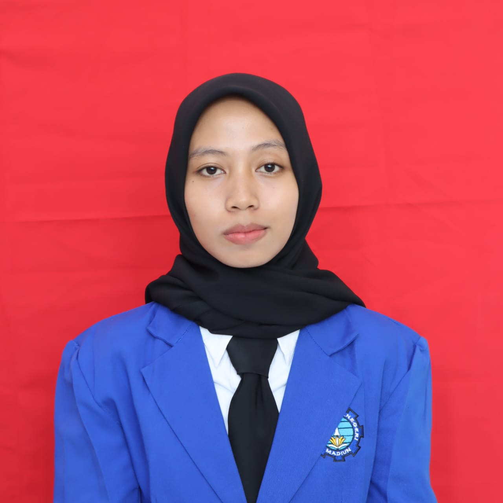

Hany Setyarini
> Web Developer Enthusiast
Mahasiswa D-III Teknologi Informasi yang membangun aplikasi web rapi dan aman dengan Laravel dan MySQL, dari analisis kebutuhan sampai berjalan di server.

// stack harian
// tentang saya
Membangun aplikasi yang dimulai dari memahami penggunanya.
Saya membangun aplikasi web yang rapi, infrastruktur cloud yang stabil, dan sistem cerdas yang berguna bagi banyak orang.
Saya Hany, mahasiswa D-III Teknologi Informasi di Politeknik Negeri Madiun. Saya terbiasa mengerjakan aplikasi web secara utuh: menganalisis kebutuhan, merancang database, membuat antarmuka, hingga menjalankannya di server.
Di luar pemrograman web, saya senang mendalami cloud computing dan sistem cerdas, yaitu data science dan machine learning, supaya aplikasi yang saya buat tidak hanya berjalan, tetapi juga semakin pintar dan berguna.
D-III Teknologi Informasi
Politeknik Negeri Madiun, 2024 - sekarang
Magetan, Jawa Timur
Terbuka untuk kerja jarak jauh
Web, cloud, sistem cerdas
Juga mengeksplorasi aplikasi mobile dengan Flutter
Web Developer, PKL
PT INKA Multi Solusi, portal IMS-SSO
Analisis, rancang, bangun, uji, dokumentasikan.
Saya memulai dari memahami kebutuhan pengguna, merancang database dan alur sistem, membangun aplikasi, mengujinya, lalu mendokumentasikan hasilnya agar mudah dipelihara.
// sedang saya dalami
Yang sedang saya pelajari sekarang.
Machine learning
Algoritma boosting seperti AdaBoost dan dasar data science untuk klasifikasi data.
Container
Docker untuk menjalankan PHP dan MySQL pada Alpine Linux.
Aplikasi mobile
Flutter dan perancangan UI untuk aplikasi log bimbingan TA.
Tugas akhir
Menjajaki topik dan studi kasus untuk tugas akhir semester depan.
// layanan
Yang bisa saya bantu.
Cocok untuk usaha kecil, komunitas, atau proyek yang butuh kehadiran digital yang rapi dan aman.
Website dan landing page
Halaman profil, usaha, atau promosi yang tampil baik di HP maupun laptop.
- Desain responsif
- Tombol WhatsApp dan formulir kontak
- Siap dipublikasikan ke hosting
Sistem informasi Laravel
Aplikasi untuk mengelola data pelanggan, karyawan, atau layanan.
- Login, hak akses, dan Single Sign-On
- Database MySQL yang terstruktur
- Analisis kebutuhan dan dokumentasi
Analisis data dan sistem cerdas
Pengolahan data dan prototipe sistem cerdas sederhana untuk kebutuhan usahamu.
- Pembuatan dan pembersihan dataset
- Model klasifikasi dasar
- Visualisasi hasil yang mudah dipahami
// perjalanan
Dari mahasiswa baru sampai siap berkarya.
- 2024
Memulai D-III Teknologi Informasi
Masuk Politeknik Negeri Madiun dan mulai belajar dasar pemrograman, basis data, dan jaringan komputer.
- April 2026, praktik kerja lapangan
IMS-SSO di PT INKA Multi Solusi
Membangun portal Single Sign-On untuk divisi IT Governance dari nol dengan Laravel 12, lengkap dengan autentikasi session dan JWT, manajemen pengguna, dan hierarki unit organisasi.
- Proyek kelompok
CRM Jawaratech
Menganalisis kebutuhan sistem layanan pelanggan servis AC, menyusun kebutuhan fungsional, dan merancang use case bersama tim.
- Semester 5, cloud computing
Proxmox, NFS, Nextcloud, dan Docker
Membangun simulasi data center dengan Proxmox VE, mengelola storage NFS, menjalankan Nextcloud di CentOS, dan menyiapkan lingkungan Docker untuk PHP dan MySQL.
- Semester 5, sistem cerdas
Data science dan machine learning
Mempelajari data science, membuat dataset sendiri, mempresentasikan algoritma AdaBoost, serta mengkaji konsep zebra cross pintar untuk transportasi berkelanjutan.
- Selanjutnya
Tugas akhir dan magang
Fokus menyiapkan tugas akhir dan mencari pengalaman magang di bidang pengembangan web.
// keahlian
Tools yang saya kuasai.
// proyek dan karya
Proyek yang pernah saya kerjakan.
// pertanyaan umum
Sebelum menghubungi saya.
Teknologi apa yang paling saya kuasai?
Laravel dan PHP dengan database MySQL, ditambah Bootstrap untuk antarmuka. Saya juga terbiasa membangun REST API dengan autentikasi JWT maupun session.
Apakah saya terbuka untuk magang atau kerja jarak jauh?
Ya, saya terbuka untuk magang dan proyek web, termasuk yang dikerjakan dari jarak jauh. Silakan sampaikan kebutuhannya lewat WhatsApp.
Bagaimana proses kerja saya?
Saya mulai dari diskusi dan analisis kebutuhan, merancang database dan alur sistem, membangun aplikasi, mengujinya, lalu menyerahkan dokumentasi supaya mudah dipelihara.
Apakah saya bisa membantu soal data dan sistem cerdas?
Untuk kebutuhan dasar bisa: menyusun dataset, menjalankan model klasifikasi sederhana seperti AdaBoost, dan menyajikan hasilnya. Untuk skala besar, saya masih terus belajar.
Bagaimana cara menghubungi saya?
Cara tercepat lewat tombol WhatsApp di bagian bawah halaman ini. Pesan akan langsung terisi otomatis.
Mari bangun sesuatu bersama.
Punya proyek, tawaran magang, atau sekadar ingin berkenalan? Kirim pesan langsung ke WhatsApp saya.
Hubungi saya via WhatsApp